History
What is Transformers?
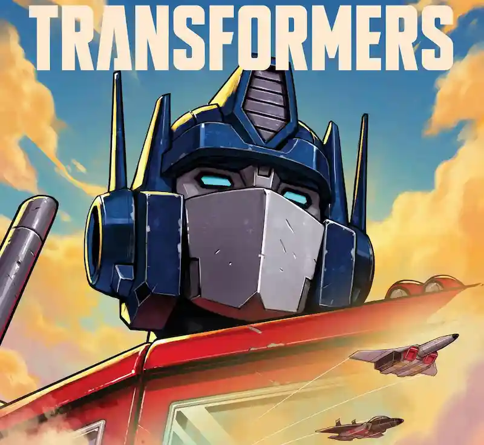
The Transformers franchise is about two factions in the alien race, called Cybertronians, fighting each other in a war. There are the heroic Autobots, who fight for peace, and the villainous Decepticons, who fight for power.
How was the Transformers franchise created?
Where it Started
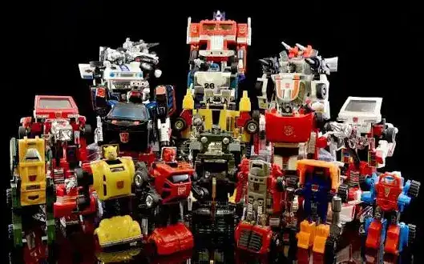
The Transformers franchise was made back in 1984 by two toy companies, "Hasbro" (from America) and "Takara Tomy" (from Japan). The franchise first started off only as a toy series, which had toys from Takara Tomy's other toy series such as "Diaclone" and "Micro Change", but rebranded to fit the western audience.
Character Designs
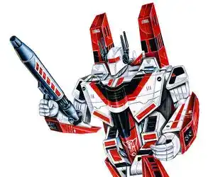
The character designs of the Transformers were created by Shōji Kawamori and Kazutaka Miyatake, both who worked on the robot anime known as "Macross" (also known as "Robotech" in the west).
Comics
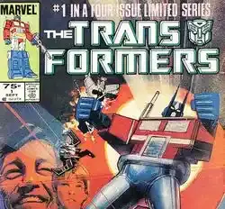
Around the same time the toyline was released, Transformers also got its own comic series made by "Marvel Comics". Jim Shooter created the story in the Transformers comics and Bob Budiansky created the names and personalities of the characters in the comics, giving life to the Transformers universe and making a baseline for future adaptations.
TV Show
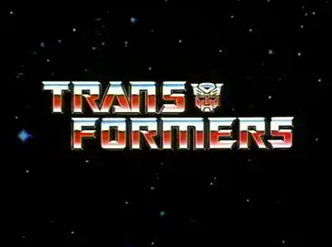
It wouldn't be until later in September 1984 that the Transformers TV show would come out.
History/Lore of the Transformers' universe
Cybertron is Born
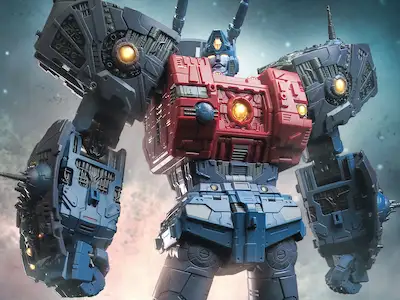
The Cybertronian race (the Transformers) were created by a God named Primus. With an ancient relic known as the Allspark, Primus used all of his energy to transform into the metal planet known as Cybertron and create new life. The Cybertronians emerged from the planet's surface, being made out of the planet's material.
Transformation Cogs
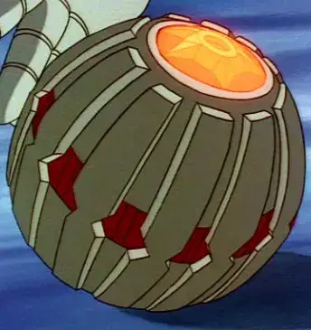
Cybertronians are born with something called a Transformation Cog. This cog gives the Cybertronian the power to transform their shape to become something new, such as vehicles. While Transformation Cogs are a key feature to Cybertronians, they can also be removed, resulting in the Cybertronian to no longer have the ability to transform.
Energon
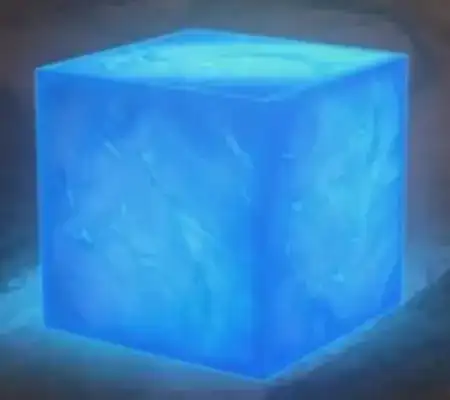
Cybertron produces an resource known as Energon. All Cybertronians have energon coursing through them and need to consume more Energon to stay functional. Energon is also used as a fuel source to power up equipment in Cybertron.
Age of the Primes
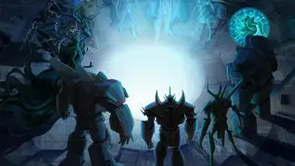
When Primus (a.k.a. Cybertron) first produced life, he created 13 special individuals known as the 13 Primes, each wielding a unique and powerful artifact, one of them being the Matrix of Leadership. This was Cybertron's first age, the "Age of the Primes". The Primes acted as Cybertron's leaders and defended their planet from any threat. When the Age of the Primes came to an end, the 13th prime sacrificed himself to reignite the "Well of the All Sparks" (where the Allspark resided), resulting in a new generation of Cybertronians to be formed.
The Great War
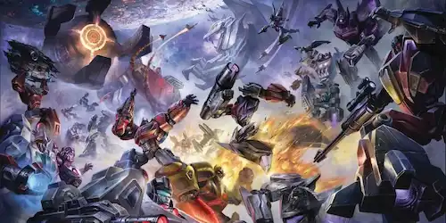
Thousands of years later, Megatron, wanting power, formed the Decepticons and started his conquest to take control over Cybertron, starting what is known as "The Great War". The battle between Autobots and Decepticons raged in Cybertron for millions of years, to the point where they drained all the resources on Cybertron, including Energon.
A Difficult Decision
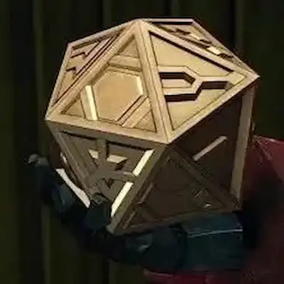
Optimus Prime knew that if Megatron and the Decepticons were to acquire the Allspark, all would be lost. To save Cybertron from Megatron's tyranny, Optimus sent the Allspark through a space bridge (space bridges are portals to other parts of space), and the Allspark was lost.
The Search
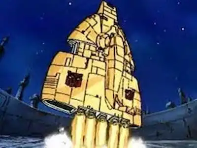
Now that Cybertron was dying, the Autobots had no choice but to leave Cybertron in search of a new planet that they could call home, where they could research a way to restore Cybertron to its former glory. However, the Decepticons followed them and after a battle in space, both factions crashed down into the planet known as Earth, where they continued their fighting there.